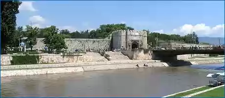

SRBIJA
Nišku tvrđavu su početkom 18. veka sagradili Turci na desnoj obali reke Nišave, u samom centru grada. Podignuta je na rimskim i srednjovekovnim
temeljima. Osnova je u obliku nepravilnog poligona, sa stranama različitih dužina. Građena je od kamena iz obližnjeg Humskog majdana, mada su
upotrebljavani i spomenici, sarkofazi i drugi građevinski materijal iz ranijih epoha.
Ima četiri velike kapije: Stambol, Beogradsku, Vidinsku i Veliku kapiju kroz koju se izlazilo na reku. Sve kapije su i danas dobro očuvane. Tvrđava
je opasana velikim šancem koji se u slučaju potrebe punio vodom iz Nišave.
Unutar tvrđave nalazilo se naselje sa dućanima, bogomolja, kasarne i ostale građevine za vojne potrebe. Od svega je sada očuvano nekoliko barutana,
džamija Bali bega iz 16. veka i jedna zasvedena građevina. Džamija je jednoprostorna građevina sa kvadratnom osnovom i kupolom, a glavni molitveni
prostor ima dvokupolni trem, koji u Srbiji ima samo Altun-alem džamija u Novom Pazaru. Uz tvrđavu je i hamam, izgrađen u 15. veku, jedna od
najstarijih građevina profane arhitekture sa početka turske vladavine. Na tvrđavi su prepoznatljivi elementi arapske arhitekture.

Kako je prvenstveno imala strategijski karakter, tvrđava je u turskom posedu bila sve do 1877. godine, kada prelazi u srpske ruke. Velika kapija,
poznata kao Vodena vrata, je rekonstruisana 1961-62.
Niška tvrđava je spomenik kulture od izuzetnog značaja, na kojoj se danas održavaju brojni kulturni i umetnički događaji.